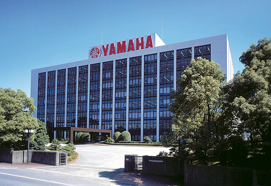
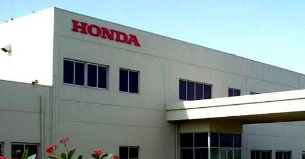
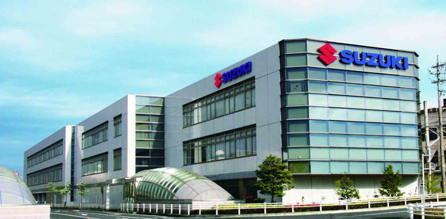
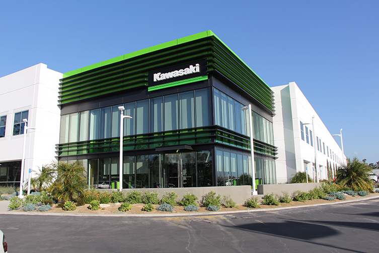

Yamaha

Yamaha Indonesia Motor Manufacturing (YIMM) adalah sebuah perusahaan yang memproduksi sepeda motor.
Perusahaan ini
didirikan pada 6 Juli 1974. Pabrik sepeda motor Yamaha mulai beroperasi di Indonesia sekitar tahun
1969, sebagai suatu
usaha perakitan saja, semua komponen didatangkan dari Jepang.
Honda

Honda Motor Company, Ltd. (Japanese: 本田技研工業株式会社 Honda Giken Kōgyō Kabushiki-gaisha, Honda Technology
Research Institute
Company, Limited) Tentang suara ini dengar (bantuan·info) (TYO: 7267) adalah produsen mobil, truk,
sepeda motor dan
skuter asal Jepang. Mereka juga membuat kendaraan segala medan (ATV), generator listrik, mesin
kelautan, dan peralatan
taman.
Suzuki

Suzuki Motor Corporation (スズキ株式会社 Suzuki Kabushiki-Kaisha) adalah perusahaan Jepang yang memproduksi
kendaraan seperti
mobil, mesin, ATV dan sepeda motor. Di Indonesia, PT. Suzuki Indomobil Sales adalah perusahaan yang
memproduksi dan
memasarkan mobil, ATV dan sepeda motor merek Suzuki.
Kawasaki

Kawasaki Heavy Industries, Ltd. (川崎重工業株式会社 Kawasaki Jūkōgyō Kabushiki-gaisha) (TYO: 7012) merupakan
sebuah perusahaan
multinasional yang menghasilkan berbagai macam produk sepeda motor. Perusahaan yang didirikan pada
tahun 1896 ini
bermarkas di Minato, Tokyo, Jepang. Perusahaan ini mempekerjakan 29.211 pekerja pada tahun 2007.